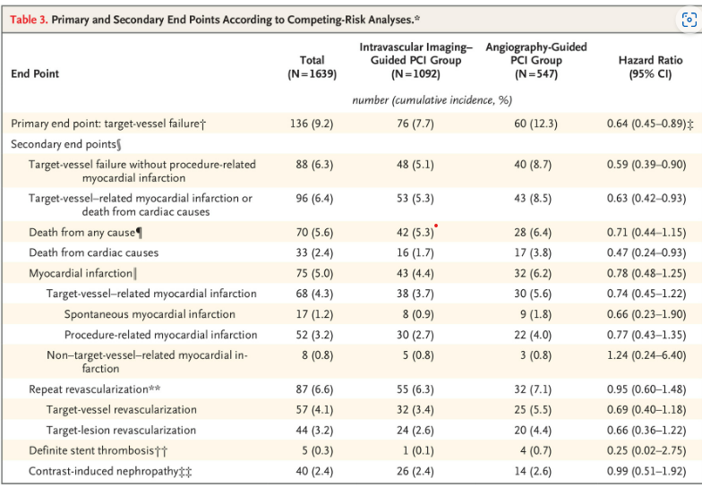
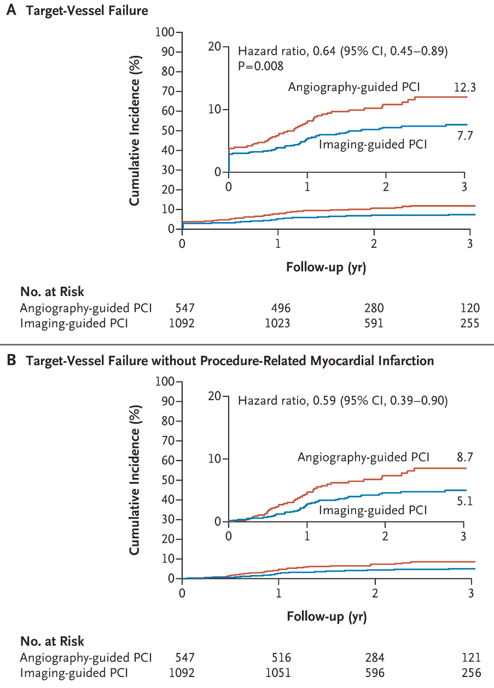

KIM YEONG HO
Intravascular Imaging–Guided or Angiography-Guided Complex PCI
심혈관 중재시술 테크닉 비교(RENOVATE-COMPLEX-PCI)
먼저, PCI란 ?
PCI 시술을 위한 가이드라인 설정 방법
초음파를 통해 PCI 시술 시 혈관 내부 상태를 확인하며 PCI를 진행하는 방법
대부분의 PCI 시술에서 사용되는 방법으로 대조제를 주입하여 혈관을 시각화하여 PCI 시술을 돕는 방법
Intravascular-guided의 일종인 IVUS / OCT의 장점
병변 특성 선제 파악 가능
스탠트 사이즈, 설치 위치, 확장 가능 유무 파악 가능
IVUS (Intravascular Ultrasound)
심장의 혈관 내부에서 초음파를 이용하여 혈관의 상태를 진단하는 검사방법 OCT (coherence tomography)
레이저를 이용하여 스캔하여 고해상도 영상으로 나타내는 방법따라서 Intravasucular-guided PCI가 좀더 안전한 시술이 가능하다고 알려져 있음.
patients with complex coronary-artery lesions
(관상동맥의 복잡한 협착이나 병변을 지니고 있는 환자)
위 환자들은 non-complex한 환자들에 비해 PCI가 나쁜 결과를 불러올 가능성이 많음
학계에선 IVUS / OCT가 선별된 환자들에게 스탠트 시술을 하기 위한 적절한 방법으로 추천됨
따라서 본 연구는 선별된 환자들 (complex lesions) 을 기준으로
Intravascular-guided PCI와 Angiograyphy-guided PCI를 비교하기로 함
PCI for complex coronary-artery lesions 진행 중이었던 19세 이상 환자
총 1639명을 2:1 (Intravausculr : Angiograpy) 비율로 Randomized
Intravasculr : 1092명 , Angiography : 547명
F/U duration median : 2.1 years (1.4 ~ 3 years)
primary outcome
target vessel failure (TVF) : 사망 (심장 관련), TVR - MI, CD-TVR
secondary outcome
이외 모든 원인의 죽음, 절차 진행중 MI 관련 TVF … 등
TVR-MI : PCI 수술 후 발생할 수 있는 심근경색의 형태
CD-TVR : PCI 시술 이후 수술 부위 관련 증상 발현 시 새로 혈관 개선 수술을 진행하는 것
MI : 심근 경색
귀무가설 : 두 집단의 (I and A) primary outcome 차이가 없을 것이다.
신뢰구간 : 90% (양측 검정 5%)
진행 방식 : Intention - to - treat
실제로 치료를 받았는지에 따라서 환자군을 나누는 것이 아니라 초기에 치료군을 나눈 것에 맞추어서 분석을 하는 것
모델 : Kaplan-Meier Model / Cox hazard regression
Muliplicity를 교정하지 않은 실험이기에 Secondary Outcome에 대해선 정확한 치료 효과를 추론하긴 어려움
Intravascular group : 7.7%
Angiography group : 12.3%
hazard ratio : 0.64 (95% 신뢰구간으로 추정, p-value : 0.008)
절차 중 MI와 관련없는 TVF
Intravascular group: 5.1%
Angiography group : 8.7%
hazard ration : 0.59대부분의 항목에서 Intravasculr group이 Angiograpy group보다 낮은 수치를 보임


Intravascular imaging-guided PCI가
angiography-guided PCI 보다
관련 risk가 적다 !
Intravascular Imaging–Guided or Angiography-Guided Complex PCI